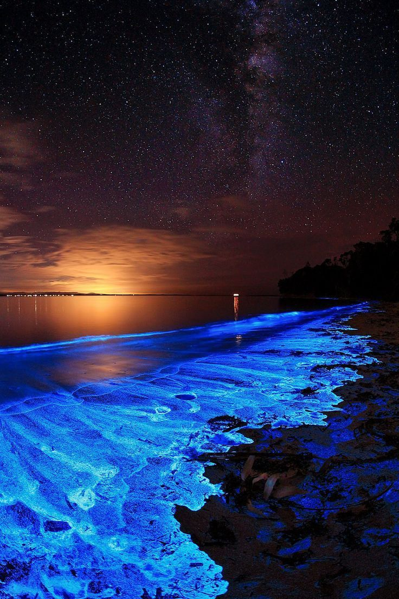

Pontos Turísticos Curiosos
A praia brilhante de Vaadhoo, nas Maldivas
Coisas mágicas acontecem nas Maldivas, e não estamos falando apenas das paisagens que parecem saídas da imaginação de artistas plásticos. Na Ilha de Vaadhoo, parte das Ilhas Raa Atoll, o mar realmente brilha durante a noite. Esse brilho é um fenômeno natural devido à bioluminescência, que é a capacidade de alguns organismos vivos de emitir luz. No caso da Ilha Vaadhoo, o brilho é produzido pelo fitoplâncton que produz luz; É assim que esses organismos respondem quando são movidos pelo mar e entram em contato com o oxigênio. Por isso, tudo o que tocam é iluminado, até os pés submersos na água.
Fontes: Gostaria de ir e eDestinos Acesso em 06/12/2019